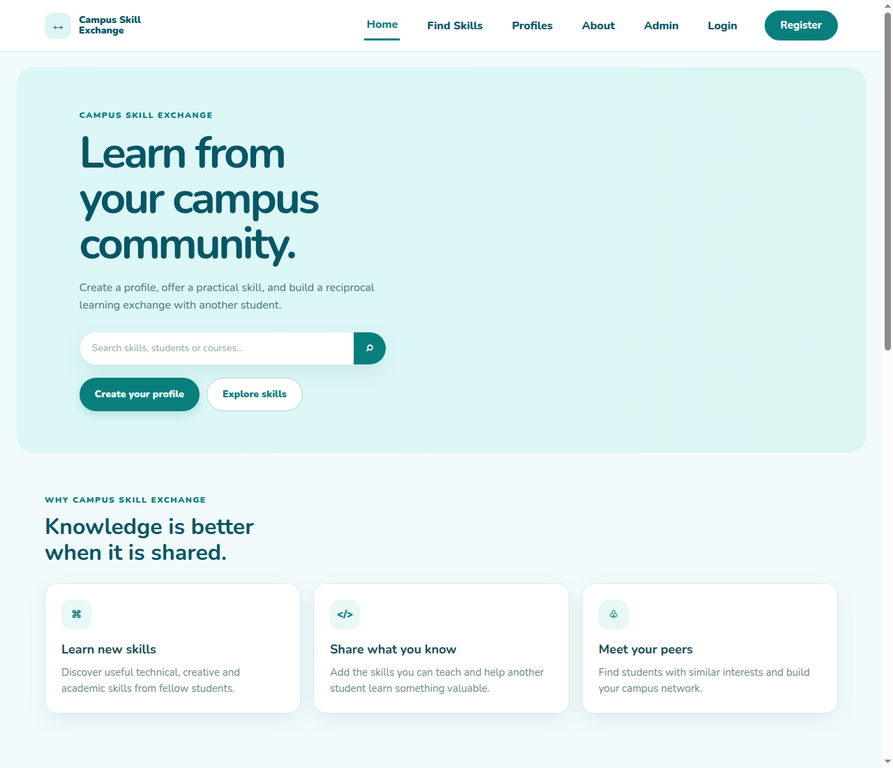

2024 — PRESENTB.Sc. Mathematics
B.Sc. Mathematics
(Computer Application)
Mahatma Gandhi Post Graduate College, Gorakhpur
B.Sc. · Computer Applications · Mathematics · Physics
I’m Ankit Gupta — a student learning to turn careful thinking into practical software, one useful system at a time.
$ whoami
ankit_gupta$ cat current_focus.txt
campus_skill_exchange$ status --now
Mathematics taught me how to look for patterns. Programming gives me a way to turn those patterns into something people can use.
I’m pursuing a B.Sc. with Computer Applications, Mathematics and Physics at Mahatma Gandhi Post Graduate College. Alongside my studies, I’m learning new skills and turning ideas into practical projects.
This portfolio is a record of the questions I’m asking, the tools I’m learning and the products I’m starting to shape.
Let’s connect ↗Logic · problem-solving
systems thinking
Mahatma Gandhi Post Graduate College, Gorakhpur
Kendriya Vidyalaya No. 2 FCI, Gorakhpur
Science streamKendriya Vidyalaya Babina Cantt
Not a claim of mastery.
A growing practice.
A student-first platform where campus communities can share skills, discover peer learning opportunities and grow together.
Every student can be both a learner and a mentor.

Explore the first front-end concept, navigation flow and student-focused experience.
Open live project ↗The next step is always
another good question.
Building a strong problem-solving foundation through a B.Sc. degree.
Exploring how Python, C, C++, SQL and the web come together.
Learning how a useful concept becomes a clear, testable experience.
A foundation in discipline, responsibility and teamwork alongside academic learning.
2 Haryana Battalion NCC · verified credentialI’m open to learning from good people, contributing to meaningful projects and building something useful together.
guptaankit05321@gmail.com ↗Visit my GitHub ↗